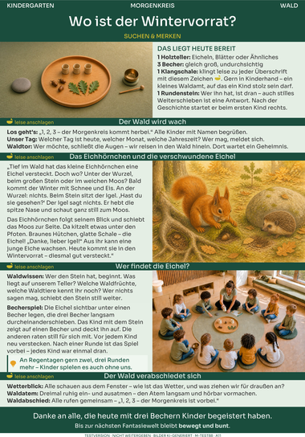
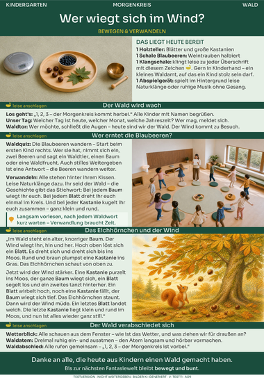
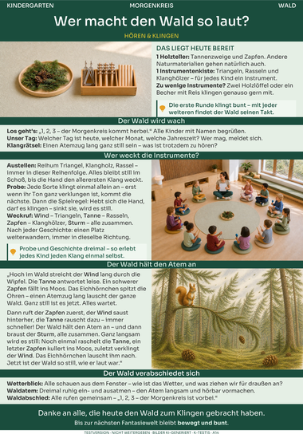
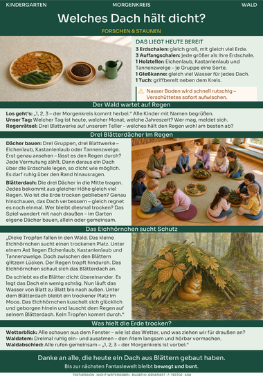

Morgenkreis · Kindergarten
Im Sitzkreis öffnet sich eine Themenwelt: eine Geschichte, ein Spiel dazu und Rituale, die jeden Morgen gleich beginnen und enden. Vier Arten – suchen, verwandeln, hören, forschen.
Zum Morgenkreis →Morgenkreise für den Kindergarten. Bewegungsstunden für Krippe und Kindergarten. Ein Bereich für Vorschulgruppen ist in Entwicklung.
Ein Sitzkreis, der zum Wald wird – oder Hütchen, die zu Fliegenpilzen werden. bewegt & bunt bringt Themenwelten in den Kita-Alltag: klar aufgebaut, thematisch verbunden und aus der täglichen Arbeit mit Kindern heraus entwickelt.






Im Sitzkreis öffnet sich eine Themenwelt: eine Geschichte, ein Spiel dazu und Rituale, die jeden Morgen gleich beginnen und enden. Vier Arten – suchen, verwandeln, hören, forschen.
Zum Morgenkreis →Aus vertrautem Material wird eine Themenstunde im Bewegungsraum. Vier Stundentypen, für jede Altersstufe eigens gedacht.
Zu den Bewegungsstunden →Ein eigener Bereich für Vorschulgruppen und den Übergang zur Schule entsteht. Noch ohne Handouts – mit einer klaren Absicht.
Mehr dazu →Aus vertrauten Dingen wird eine Welt. Im Sitzkreis reisen die Kinder durch ein Waldtor, ein Hoftor, ein Zootor; im Bewegungsraum werden Matten zu Waldteichen und Hütchen zu Fliegenpilzen. Die Kinder betreten keinen Raum – sie betreten eine Themenwelt.
Material, Ablauf, Begleitung und Abschluss stehen auf jedem Blatt an derselben verlässlichen Stelle – im Morgenkreis wie in der Bewegungsstunde. Wer ein Blatt kennt, findet sich auf jedem zurecht.
Kein Erfinden unter Zeitdruck: Das Blatt trägt den Ablauf – und lässt Raum für Ihre Gruppe. Sie entscheiden, was Ihre Kinder heute brauchen.
Morgenkreis · zunächst für den Kindergarten
Ein Blatt, ein Morgen. Die Kinder sitzen im Kreis, in der Mitte liegt ein Holzteller, und mit einem Zählruf öffnet sich die Themenwelt. Eine kurze Geschichte und ein Spiel gehören zusammen – mal führt die Geschichte ins Spiel, mal das Spiel in die Geschichte. Ein gemeinsamer Atemzug schließt den Kreis. Was Sie dafür brauchen, steht oben auf dem Blatt – meist wenige Dinge, die es in jeder Kita gibt.
„1, 2, 3 – der Morgenkreis kommt herbei." Alle Kinder werden mit Namen begrüßt, der Tag bekommt seinen Platz – und dann öffnet sich das Tor in die Themenwelt.
Eine kurze Erzählung aus der Welt: das Eichhörnchen und die verschwundene Eichel, die Feldmaus in der Scheune, die Tierpflegerin in der Futterküche. Vorgelesen, im eigenen Tempo.
Ein Spiel in der Kreismitte: suchen, verwandeln, lauschen oder ausprobieren. Je nach Blatt kommt das Spiel vor oder nach der Geschichte – das Blatt sagt es.
Ein Blick aus dem Fenster aufs Wetter, dreimal ruhig atmen, und alle rufen gemeinsam: „1, 2, 3 – der Morgenkreis ist vorbei." Jeder Morgenkreis endet gleich.
In den Morgenkreisen zum Suchen und zum Verwandeln klingt eine Klangschale leise zu jeder Überschrift – gern in Kinderhand, ein kleines Amt, auf das ein Kind stolz sein darf. Beim Suchen kommt ein Rundenstein dazu: Er zeigt, wer dran ist, und stilles Weiterschieben ist auch eine Antwort. So kommt jedes Kind vor, und keines muss.
Zu jeder Themenwelt gehören vier Morgenkreise, einer je Art. Wald und Bauernhof haben alle vier, der Zoo sein erstes. Keine feste Reihenfolge – Sie wählen, was zu Ihrer Woche passt.
Etwas liegt versteckt – unter drei Bechern, unter einem Tuch, in einem Fühlbeutel. Die Kinder suchen, tasten und behalten, was sie gefunden haben.
Die Geschichte gibt das Stichwort, die Kinder machen die Bewegung: Ein Baum wiegt sich, ein Blatt dreht sich, eine Kastanie rollt sich klein und rund zusammen.
Jedes Kind bekommt ein Instrument. Erst wird gelauscht, dann weckt die Geschichte den Wald oder den Hof – laut, lauter, und wieder ganz still.
Eine Frage und ein kleiner Versuch in der Kreismitte: Welches Dach hält dicht? Wer lässt den Mais tanzen? Vermuten, hinsehen, staunen.
Den Morgenkreis gibt es zunächst für den Kindergarten. Die Blätter sind im begleiteten Praxistest – wie Sie mitmachen können, steht unter Kontakt.
Bewegungsstunden · für Krippe und Kindergarten
Aus Hütchen werden Fliegenpilze, aus Matten Waldteiche und aus vertrautem Material eine ganze Themenstunde – klar aufgebaut, altersgerecht übersetzt und bereit für den Bewegungsraum.
Die Kinder kommen im eigenen Tempo an: zuschauen, näher rücken, mitgehen – alles ist Teilnahme.
Gemeinsam entdecken oder spielen – das Blatt führt mit klaren, kurzen Schritten.
Ein neuer Impuls hält die Stunde lebendig, ohne sie zu überladen.
Mit dem Waldsignal und dem gemeinsamen Waldatem endet jede Stunde gleich – ein Ritual, das Sicherheit gibt.
Diese Rituale verbinden alle acht Blätter – sie geben den Kindern Halt und Ihnen den roten Faden in die Hand.
Krippe und Kindergarten erleben denselben Wald – aber nicht dieselbe Stunde. Was die Kleinen als ruhiges Entdecken erleben, wird für die Großen zur Olympiade. Aufbau, Sprache und Rituale bleiben vertraut; Tempo, Spielformen und Anspruch sind für jede Altersstufe eigens gedacht.
Eine Themenwelt sind acht Blätter: vier Stundentypen, jeweils für Krippe und Kindergarten. Keine feste Reihenfolge – Sie wählen, was zu Ihrer Woche passt.
Ruhig ankommen und ausprobieren – oder der große Tag der Waldspiele.
Kleine Wege durch den Wald – und der große Lauf über Baumstämme und Moosinseln.
Schwer wie Kastanien, leicht wie Federn – freies Spiel in zwei Größen.
Der Wald findet seinen leisen Takt – vom Lauschen bis zum gemeinsamen Klang.
Wald, Bauernhof und Zoo geben den Geschichten, Spielen und Bewegungsstunden ihre eigene Atmosphäre. Im Morgenkreis führt im Wald das Eichhörnchen durch die Geschichte, auf dem Hof die Feldmaus, im Zoo das Erdmännchen. Den Auftakt bilden Morgenkreis-Handouts in allen drei Welten und Bewegungsstunden in der Themenwelt Wald.
Morgenkreis und Bewegungsstunden – die erste Welt, in beiden Angeboten zu Hause.
Morgenkreis im Praxistest – vier Blätter, von der Kiste unter dem Tuch bis zum tanzenden Mais.
Erster Morgenkreis im Praxistest: Was steckt im Beutel?
Die Themenwelten sind so gebaut, dass weitere folgen können – für den Sitzkreis wie für den Bewegungsraum.
René Krakow ist Ergotherapeut und begleitet Kinder individuell in Krippe und Kindergarten. bewegt & bunt ist aus diesem Alltag entstanden – aus einer einfachen Frage: Wie kann ein Morgenkreis oder eine Bewegungsstunde klar vorbereitet sein und trotzdem offen für jedes einzelne Kind bleiben? Die Antwort steht auf jedem Blatt: Sie kennen Ihre Kinder. bewegt & bunt liefert Struktur und roten Faden.
Mehr über René →„Ein Hütchen bleibt ein Hütchen – bis ein Kind darin einen Fliegenpilz sieht."
Vorschule · in Entwicklung
Geplant sind themenbasierte Angebote für ältere Kindergartenkinder und den Übergang zur Schule – klar aufgebaut, spielerisch gedacht und aus dem pädagogischen Alltag heraus entwickelt. Handouts dafür gibt es noch nicht. Sobald die ersten Formate in den begleiteten Praxistest gehen, werden sie hier vorgestellt.
Die Morgenkreis-Handouts werden derzeit im begleiteten Praxistest eingesetzt und persönlich weitergegeben – als Testfassungen zum Ausprobieren in Ihrer Gruppe, nicht zum Weitergeben. Wenn Sie eine Rückmeldung geben, einen Einblick erhalten oder mit Ihrer Einrichtung teilnehmen möchten, schreiben Sie mir gern – ich antworte zeitnah.